People analytics · Python · SQL · Excel · Power BI
Why people leave a 2,400-person software company, and what it is worth to fix
Orrin Digital lost one in five people in 2025. I cleaned the HRIS export into SQLite, rebuilt headcount month by month from the effective-dated job history, measured attrition properly, modelled what drives resignations and checked it against the known truth, found the managers who lose people fastest, scored flight risk and tested it on a year the model never saw, and costed five retention options in a live Excel business case and a Power BI dashboard.
Synthetic data. 3,864 people over Jan 2023 – Dec 2025 from a documented month-by-month workforce simulation. Resignations follow a known model, and the HRIS export has the mess real ones have (spelling variants, two date formats, monthly salaries, test records, rehires under new ids), so every fix and every estimate is checked against the truth.
Findings
- Pay drift, stalled careers and workload drive resignations. Paid under 90% of band midpoint: odds of resigning ×2.14 (231 resignations over three years). Three years without a promotion: ×1.75 (204). Overtime above 20 hours a month: ×2.21 (144). The model finds the same top three as the generator's truth, and 11 of 12 true effects sit inside its 95% intervals.
- The 2025 hiring freeze cost more than it saved. Vacancies went from 2.2% to 6.5%, staff on heavy overtime from 6.5% to 37%, and resignations followed. It saved £3.26M of salaries but cost £3.51M of overtime and £1.17M of resignations.
- Exit interviews hide the real reasons. "Better opportunity" is the top stated reason, but a third of those leavers had waited 3+ years for a promotion and over a quarter were paid under band. Only 20 people named their manager.
- Twelve managers lose people far faster than their teams' risk explains (83 extra resignations in three years). Eleven of them are truly poor managers in the generator, found from outcomes alone.
- The return-to-office mandate pushed 30% of the people it moved out within a year, against 17-18% for everyone else.
- The engagement survey is too weak to steer by, but people who stop answering it resign 26% more often.
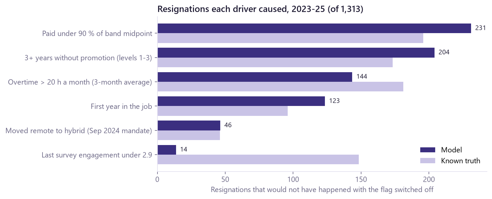
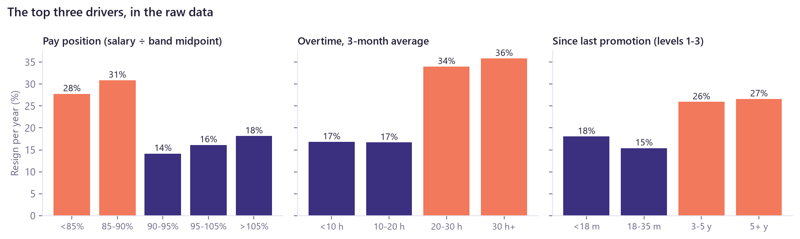
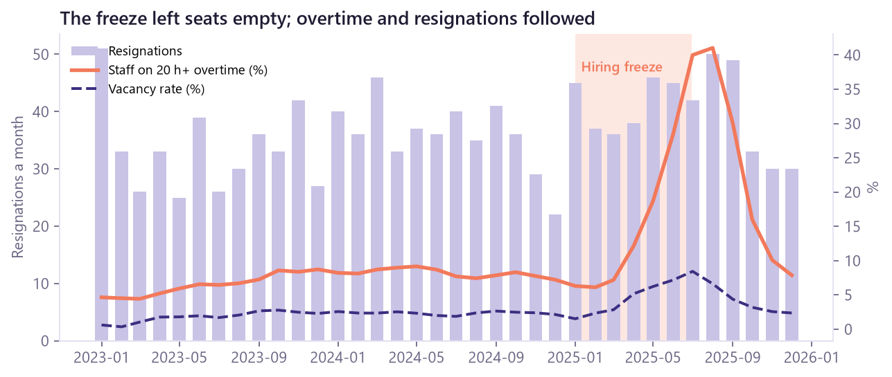
Managers and flight risk
Each manager's resignations against what the model expects for the people in that team. The flight-risk score was trained on 2023 – 24, scored in Dec 2024 and checked against who actually resigned in 2025: the top 10% of scores held 14% of leavers, against 16% for the generator's own formula. Individual resignations are partly random, so the list is for starting conversations, not for decisions.
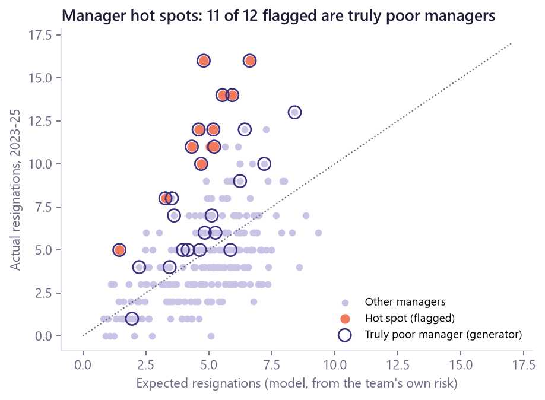
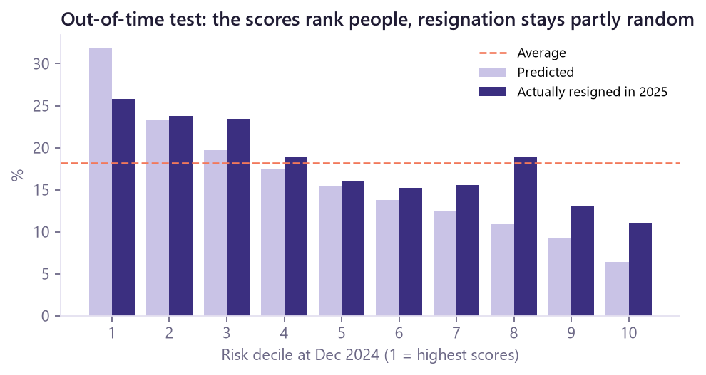
The business case
Resignations avoided = resignations among the people affected × the share the driver causes ((OR − 1) / OR) × the share of the problem an option removes. A resignation costs 37% of salary for an associate and up to 92% for a head of department (recruitment, vacancy cover, ramp-up, team time).
| Option | Resignations avoided a year | Annual cost | Net benefit a year |
|---|---|---|---|
| Staff to approved headcount (no freeze) | 45 | −£0.26M | £1.42M |
| Hybrid exceptions for people moved off remote | 18 | £0 | £0.53M |
| Lift everyone under 90% of band midpoint to 90% | 64 | £1.25M | £0.48M |
| Coaching or re-assignment for 12 hot-spot managers | 14 | £0.07M | £0.30M |
| Promote stalled top performers (10% rise) | 18 | £1.24M | −£0.69M |
| Recommended package (first four) | 142 | £1.07M | £2.72M |
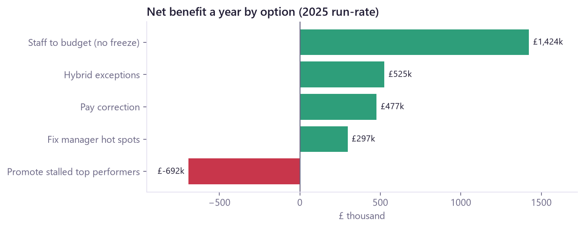
Excel retention business case
Every number is a live formula. The cost of a resignation by level, on-costs, overtime premium and target pay position are blue inputs; each option has a "share of the problem removed" lever; the pay-gap list and the High-band flight-risk list sit on their own sheets. Recalculated in Excel with 0 errors and matched to the Python results.
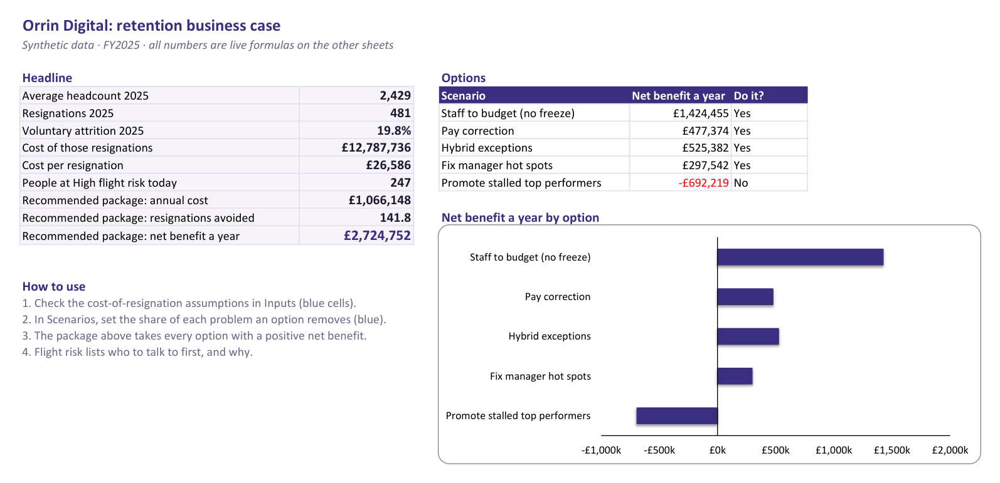
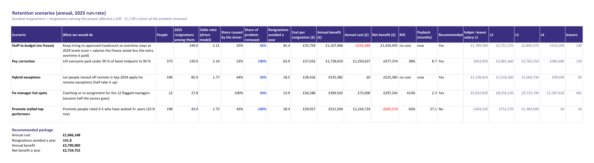
Power BI dashboard
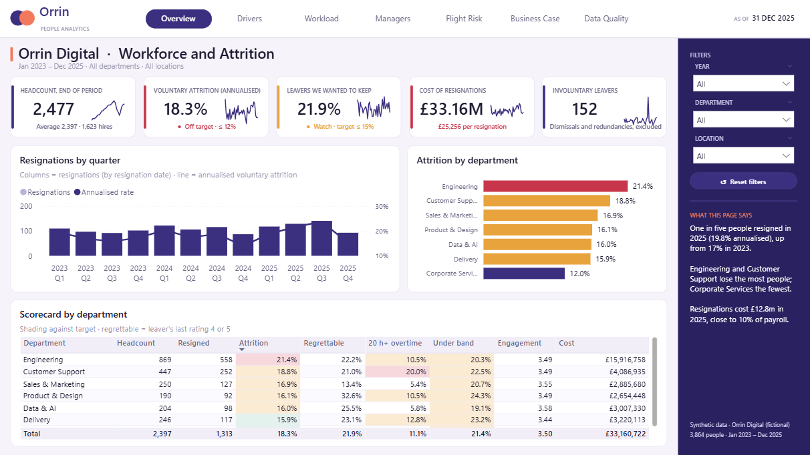
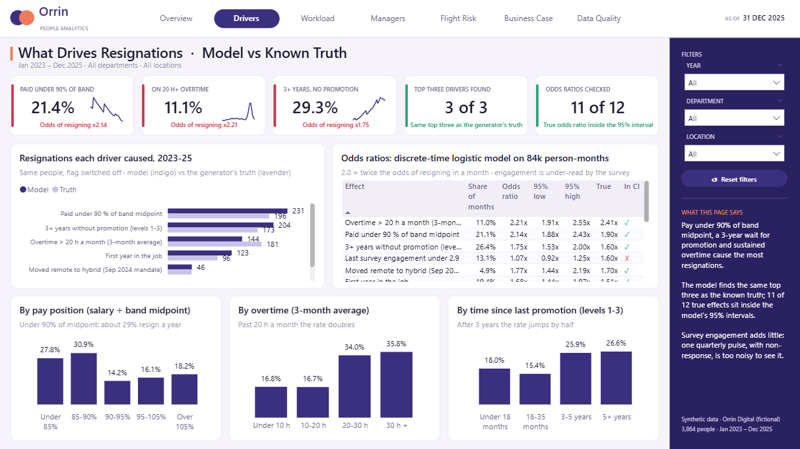
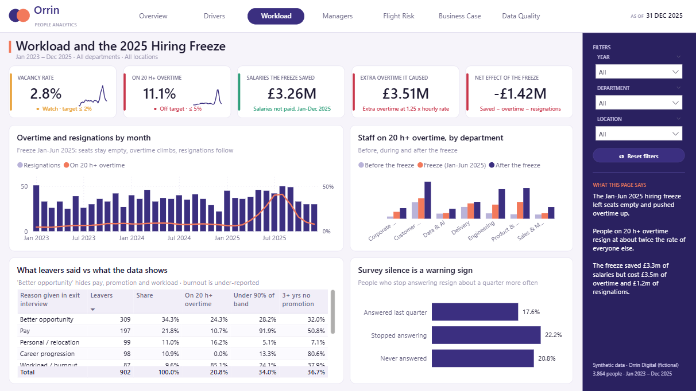
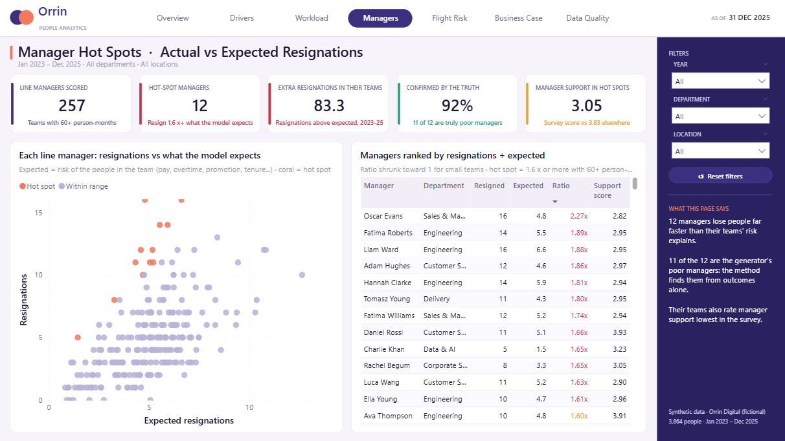
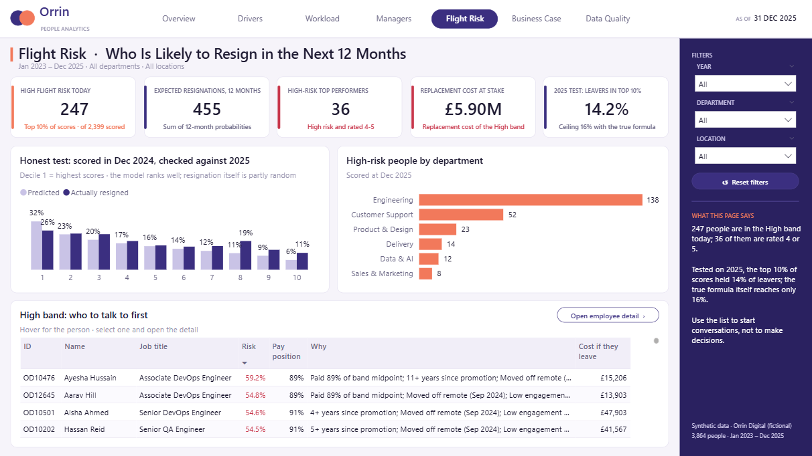
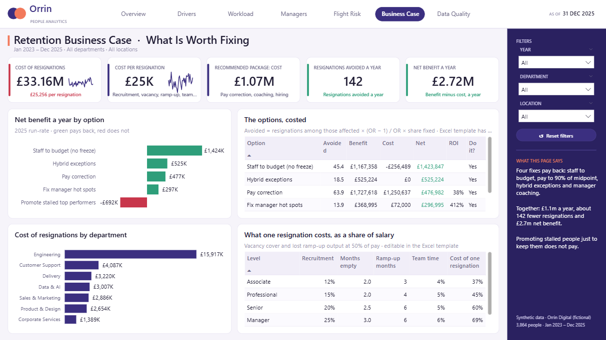
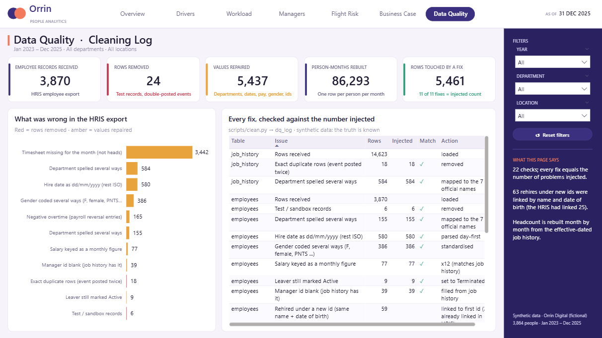
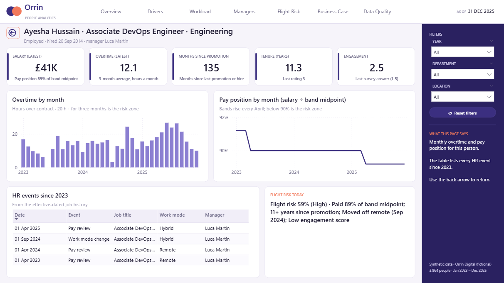